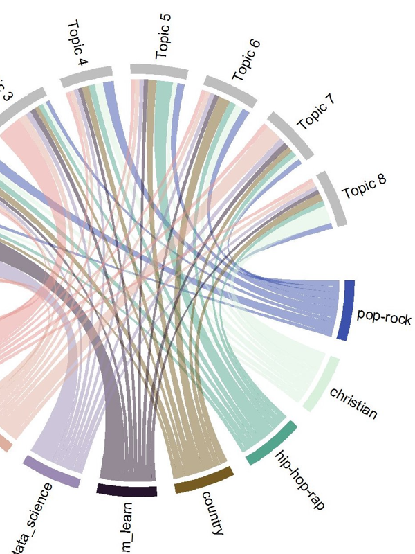
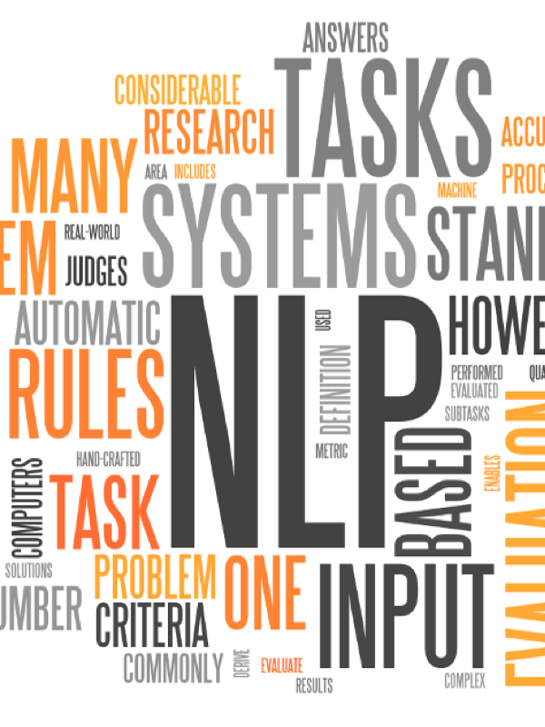
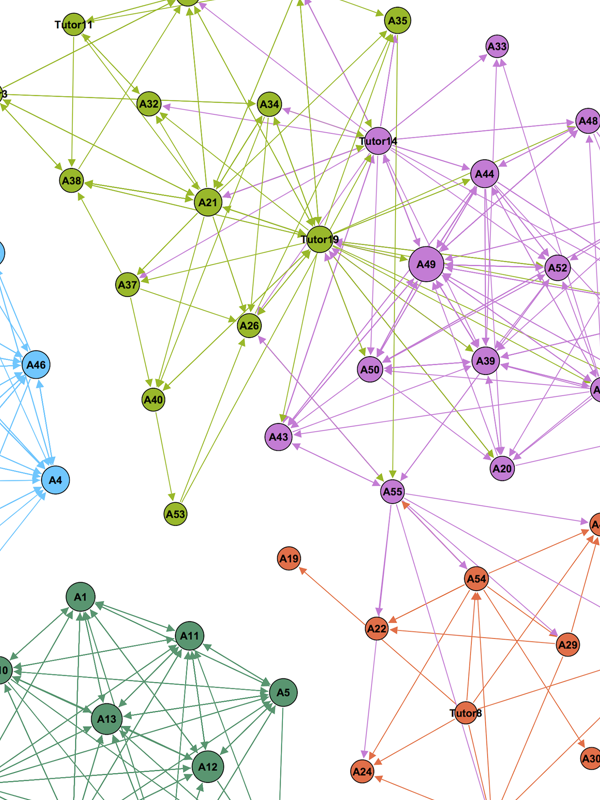

業務支援内容
データ解析
私たちの脳は先入観や印象的な出来事に大きく左右されてしまうと言われています。
統計学はそういった印象的なバイアスを取り除き、ビジネスにおける正しい判断の手助けをします。
統計学はそういった印象的なバイアスを取り除き、ビジネスにおける正しい判断の手助けをします。
時系列分析
ビッグデータの普及につれて、金融にはじまる時系列的なデータが増えています。
時系列分析はこのようなデータを適切に処理し、一般的なデータ分析や機械学習の性能を高めることができます。
ベイズモデリング
近代のコンピュータの高速化により、高度な計算処理を必要とするベイズ統計学の利用が可能になりました。
ベイズモデリングは自然言語処理の他、センサーやロボティクスにも利用されています。
人工知能 (深層学習 & 強化学習)
ビッグデータの利用と計算技術の向上により、人工知能の研究が急速に発展しています。
深層学習により画像など複雑なデータを処理することが可能になり、強化学習は機械が自ら学ぶことを可能にしました。
ネットワーク分析 & データ可視化
SNSの普及により、データ間のリンクを分析するネットワーク理論と呼ばれる領域が近年注目を集めています。
これらのネットワークを含め、データ可視化はデータの背後にある思わぬ関係性を発掘します。
クラウド & 分散処理
クラウドにより、高度な演算処理能力を有するコンピュータを比較的手軽に利用できるようになりました。
深層学習を始めとする近代的な機械学習技術は並列計算処理の利用により高速化が可能です。
データベース
データを正しく集積するデータベースは、情報化技術を根底で支える影の立役者と言えるでしょう。
大規模なデータ解析・機械学習等の開発はしっかりとしたデータ基盤によって支えられてます。
ビジネス価値創出
データを活かすには科学的な知見だけでなくビジネスの価値を生み出す創造力が大切です。
これまで経営企画・金融・広告をはじめとした様々な分野でデータを活用してきた経験により、お客様のイノベーションをサポートします。
プロジェクト実績

Topic Modeling
Facebookに掲載されるニュース記事を活用したサービスの手法および実装を目的としたプロジェクトを行なっています。
Facebook UK 本社 London School of Economics (LSE)

